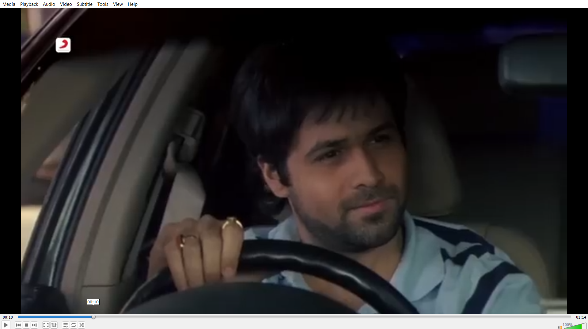
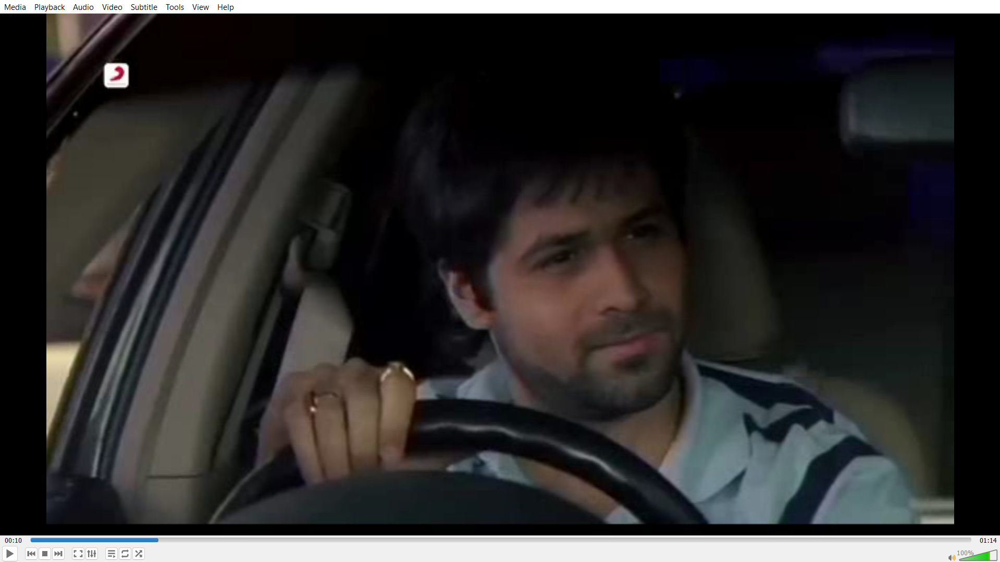
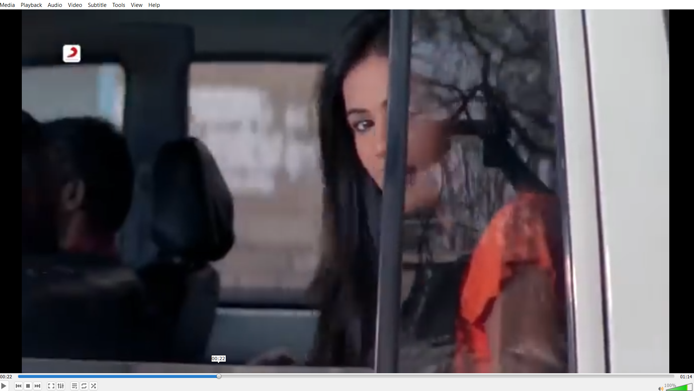
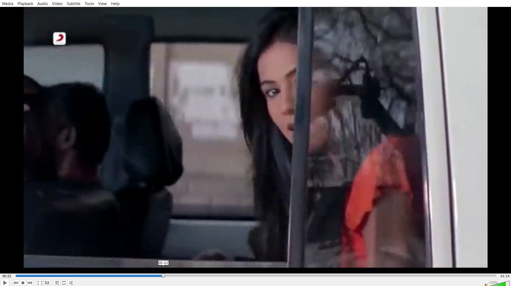

Project Description
This project is a learning-focused video compression pipeline. It reads a video, prepares each
frame for block processing, separates frames into I-frames and P-frames, compresses residual data,
writes compact binary chunks, creates a playlist file, and reconstructs video frames for validation.
The main implementation is in main.py, where frame processing, compression, chunk writing,
decoding, and logging are kept together for study and experimentation.
I built the project because my streaming website already used Cloudinary and Multer for media handling. That approach works well for real application usage, but it hides many internal details. Tools like FFmpeg are also powerful, but using them directly does not show how compression works at frame, block, residual, coefficient, and binary-layout levels. This project was created to understand those internals by building the core ideas manually.
Measured Results From Logs
The following values come from info_log.txt, frame_log.txt, and the generated
chunk files. They describe how many frames were processed, how the frame types were distributed, and
how much size reduction was achieved against raw padded RGB frame data.
Compression Method
Frame Preparation
The input frame is padded so both width and height are multiples of 16. This makes every frame split cleanly into 16 x 16 macroblocks.
I-Frame Decision
The first frame is always stored as an I-frame. Later frames become I-frames when the mean squared error against the reconstructed reference is greater than the threshold value of 500.
P-Frame Prediction
If the error is low enough, the frame is stored as a P-frame. Each macroblock searches nearby blocks in the reconstructed reference and saves a small motion vector.
Residual Coding
The difference between the current block and reference block is converted to grayscale, split into four 8 x 8 blocks, transformed with DCT, quantized, and saved as signed 16-bit coefficients.
Detailed Compression Flow
- Padding: frames are expanded to fit the 16 x 16 block grid.
- Block split: each padded frame is divided into macroblocks using
BLOCK_SIZE = 16. - Motion estimation: each block checks neighboring positions from -1 to +1 in both directions.
- Residual creation: the selected reference block is subtracted from the current block.
- DCT transform: residual data is converted into frequency coefficients.
- Quantization: coefficients are divided by a quantization matrix where each value is 8.
- Binary serialization: I-frames and P-frames are written into a custom binary layout using magic bytes
STR1and version1. - Extra compression: serialized binary chunks are compressed with
zlib.compress(payload, 9). - Reconstruction: the decoder reads each chunk, rebuilds I-frames directly, and rebuilds P-frames from motion vectors plus decoded residuals.
Techniques Used
The project combines multiple compression ideas instead of depending on one single method. The main techniques are frame prediction, block-based motion search, grayscale residual coding, DCT, quantization, custom binary storage, and zlib compression.
Padding And 16 x 16 Macroblocks
Before compression starts, every frame is padded so its height and width are divisible by
16. This prevents incomplete edge blocks and allows the whole frame to be divided into
equal 16 x 16 macroblocks. These macroblocks are the main units used for motion prediction. A fixed
block size also makes decoding easier because the decoder can rebuild the same grid structure.
Motion Search And Motion Vectors
For a P-frame, the encoder does not store the full current frame. It tries to predict the current
frame from the previously reconstructed frame. For every 16 x 16 macroblock, the function
find_best_match searches a small local area around the same block position in the
reference frame.
for di in range(-1, 2):
for dj in range(-1, 2):
ni, nj = i + di, j + dj
cand = blocks2[ni][nj]
err = mse(block, cand)
The search range is from -1 to +1 in both row and column directions. That
gives nine possible reference positions: the original position plus its eight neighbors. The block
with the lowest mean squared error is selected, and only the small movement value
(dx, dy) is stored as the motion vector. This is smaller than storing the full block.
Predicted Frame And Residual Error
After the best reference block is found, the predicted block is taken from the previous reconstructed frame. The encoder then subtracts that reference block from the current block. This difference is called the residual error.
ref = b2[i + dx][j + dy]
residual = b1[i][j].astype(np.float32) - ref.astype(np.float32)If the prediction is good, the residual contains much less information than the original block. During decoding, the frame is reconstructed by adding the decoded residual back to the predicted reference block. This is the reason P-frames can be smaller than I-frames.
Grayscale Residual Coding
The residual is converted from color to grayscale before DCT compression. This reduces the amount of residual data because the encoder stores one channel of residual coefficients instead of separate coefficients for blue, green, and red channels.
gray = cv2.cvtColor(residual, cv2.COLOR_BGR2GRAY).astype(np.float32)
The same decoded grayscale residual is applied back to all three color channels during reconstruction.
This is a deliberate simplification for learning. It reduces stored data and makes the algorithm easier
to understand, but it can lose some color-specific error detail compared with storing separate residuals
for each color channel. The log also records grayscale data size separately: 417.55 MB,
compared with 1252.65 MB for raw padded RGB data.
8 x 8 DCT Transform
Each 16 x 16 residual block is split into four 8 x 8 blocks. The DCT, or Discrete Cosine Transform, converts pixel error values into frequency coefficients. In simple terms, it changes the data from raw spatial differences into values that describe smooth areas, edges, and detail frequencies.
This is useful because most natural video blocks contain more low-frequency information than high-frequency information. After DCT, many coefficients become small, which makes them easier to reduce through quantization and later binary compression.
Quantization
After DCT, each coefficient is divided by a quantization matrix. In this project, the matrix uses
the value 8 for every position.
Q = np.ones((8, 8)) * 8
def quantize(b):
return np.round(b / Q)Quantization is the lossy part of the compression. It reduces precision so coefficients take fewer useful values. Smaller coefficient values are easier to store, and tiny visual differences are removed. During decoding, the values are multiplied by the same matrix through dequantization before inverse DCT.
Binary Format
The encoded data is stored in a custom binary format instead of plain text. This keeps the output more
compact. The binary stream starts with magic bytes STR1 and a version number. Then each
frame is written with a small type marker.
| Stored Item | Binary Content | Reason |
|---|---|---|
| I-frame | Frame type byte, JPEG byte length, JPEG bytes | Stores a complete reference frame for decoding and recovery. |
| P-frame | Frame type byte, block rows, block columns, motion vectors, DCT coefficients | Stores only prediction information and residual data. |
| Macroblock | dx, dy, and four 8 x 8 groups of signed 16-bit coefficients |
Represents one predicted 16 x 16 block compactly. |
zlib Compression
After the custom binary payload is created, the project applies zlib.compress(payload, 9).
This is a second compression stage. DCT and quantization reduce the video information first, binary
serialization packs it into a compact structure, and zlib then removes repeated byte patterns from
that binary payload.
Why I-Frames Store The Original Frame
I-frames are stored as complete original frames because predictive frames need a reliable reference. A P-frame depends on a previous reconstructed frame. If every frame were predictive, decoding could not start cleanly, and one error could continue spreading through many later frames.
Keeping I-frames as complete JPEG images gives the decoder reset points. The first frame is always an I-frame, and later frames become I-frames when the color-frame mean squared error is too high. This means the encoder switches back to a full frame when prediction is no longer accurate enough.
5-Second Segments And I-Frame Boundaries
The chunking logic targets about 5 seconds per segment. It does not cut at a random frame. It waits until at least 5 seconds have passed and the current frame is an I-frame. This precaution keeps the first frame of each new segment as an I-frame, so the decoder has a complete frame available at the segment boundary.
if ts - last >= 5 and t == "I":
points.append(i)
last = ts
Because the boundary waits for an I-frame, some segments are slightly longer than 5 seconds. For
example, the logs show segment durations such as 6.64 s, 6.28 s, and
6.76 s. This is intentional because decoding reliability is more important than cutting
exactly at five seconds.
Core Code Overview
The code in main.py is organized into small functions for padding, block handling,
motion estimation, residual compression, serialization, chunk creation, and decoding.
Important Constants
SEG_MAGIC = b"STR1"
SEG_VERSION = 1
COEFF_BYTES_PER_MB = 4 * 64 * 2
BLOCK_SIZE = 16
Q = np.ones((8,8)) * 8
threshold = 500BLOCK_SIZE = 16
Creates a fixed 16 x 16 macroblock grid for motion prediction.
Q = 8
Controls quantization strength for DCT coefficients.
threshold = 500
Decides whether a frame is stored as an I-frame or P-frame.
Residual Encoder
def encode_residual(residual):
gray = cv2.cvtColor(residual, cv2.COLOR_BGR2GRAY).astype(np.float32)
tiles = []
for y in range(0, gray.shape[0], 8):
for x in range(0, gray.shape[1], 8):
block = gray[y:y+8, x:x+8]
block = block - 128
d = dct2(block)
q = quantize(d)
q_int = np.round(q).astype(np.int16)
tiles.append(q_int.reshape(64))
return np.stack(tiles, axis=0)P-Frame Block Prediction
for i in range(len(b1)):
for j in range(len(b1[0])):
dx, dy = find_best_match(b1[i][j], b2, i, j)
ref = b2[i+dx][j+dy]
residual = b1[i][j].astype(np.float32) - ref.astype(np.float32)
comp = encode_residual(residual)
rec_res = decode_residual(comp, ref.shape[:2])Chunk Compression
payload = serialize_encoded(encoded[s:e])
data = zlib.compress(payload, 9)
with open(f"segments/segment_{i}.ts", "wb") as f:
f.write(data)Frame Type Analysis
The frame log records every frame number, frame type, and timestamp. This shows that most frames were compressed as P-frames, which means the project reused previous reconstructed frames instead of storing every frame independently.
| Frame Type | Count | Share | Meaning |
|---|---|---|---|
| I | 478 | 25.71% | Stored as JPEG images when a full reference frame is needed. |
| P | 1,381 | 74.29% | Stored using motion vectors and residual coefficients. |
| Total | 1,859 | 100% | Processed at 25 FPS for an approximate duration of 74.36 seconds. |
Chunk Log Details
The project writes compressed binary chunks and lists them in index.m3u8. Each chunk starts
at an I-frame when possible, so decoding has a reliable reference frame at chunk boundaries.
| Chunk | Frame Range | Frame Count | Duration | Logged Size |
|---|---|---|---|---|
| 0 | 0 to 165 | 166 | 6.64 s | 3.99 MB |
| 1 | 166 to 290 | 125 | 5.00 s | 2.66 MB |
| 2 | 291 to 415 | 125 | 5.00 s | 3.44 MB |
| 3 | 416 to 541 | 126 | 5.04 s | 2.93 MB |
| 4 | 542 to 666 | 125 | 5.00 s | 2.00 MB |
| 5 | 667 to 810 | 144 | 5.76 s | 2.84 MB |
| 6 | 811 to 967 | 157 | 6.28 s | 3.92 MB |
| 7 | 968 to 1097 | 130 | 5.20 s | 2.59 MB |
| 8 | 1098 to 1241 | 144 | 5.76 s | 3.53 MB |
| 9 | 1242 to 1410 | 169 | 6.76 s | 3.65 MB |
| 10 | 1411 to 1536 | 126 | 5.04 s | 4.00 MB |
| 11 | 1537 to 1661 | 125 | 5.00 s | 4.90 MB |
| 12 | 1662 to 1809 | 148 | 5.92 s | 4.07 MB |
| 13 | 1810 to 1858 | 49 | 1.96 s | 1.31 MB |
Why Segmentation Matters
Segmentation means the video is divided into smaller time-based chunks instead of being handled as one large file. In this project, the target chunk length is about 5 seconds. This design is useful because a player can begin work with the first chunk while the remaining chunks are still waiting to be loaded or processed. The user does not need to wait for the full video file before playback can begin.
Smaller chunks improve the user experience in several ways. Startup can be faster because the first playable unit is small. Seeking is cleaner because the player can jump near the requested time and load only the chunk around that point. If one chunk fails, the application can retry only that chunk instead of repeating the whole video transfer. It also allows progress and buffering to feel more responsive, because the application works with many manageable units instead of one large binary.
Segmentation also improves efficiency. Memory use is lower because the application can decode or cache a small chunk at a time. Network usage can be more practical because only the needed time range has to be loaded. It also creates a path for future improvements such as quality switching, preview loading, partial downloads, and better seeking behavior.
Why About 5 Seconds
A 5-second target is a practical balance. Very tiny chunks would create too many files and too much metadata overhead. Very large chunks would slow startup and seeking. A 5-second chunk is short enough for quick buffering and long enough to keep the number of chunks reasonable. The project waits for an I-frame before starting a new chunk, so some chunks are slightly longer than 5 seconds, but each new chunk has a strong decoding starting point.
How We Can Use It
The generated index.m3u8 file works like a map. It stores the duration of each chunk and
the path to the matching compressed file. A web video feature can read that playlist, load the first
chunk for quick playback, continue loading later chunks as the user watches, and jump to the right
chunk when the user seeks to another timestamp.
- Fast start: load chunk 0 first and begin playback from its I-frame.
- Smooth buffering: load the next chunk before the current one finishes.
- Seeking: calculate the target time, find the nearest chunk in
index.m3u8, and decode from that chunk's first I-frame. - Retry handling: if a chunk has a loading problem, retry that chunk only.
- Future quality modes: keep multiple chunk sets at different quality levels and choose the right one based on bandwidth.
Visual Frame References
The report also includes reference images from the original and reconstructed outputs. These images make the compression result easier to understand because the reader can compare the source frame with the frame rebuilt by the custom decoder at the same timestamp.
The 10-second and 22-second samples are useful checkpoints. They show how the predicted frame, grayscale residual, DCT coefficients, quantization, binary storage, and zlib-compressed chunks still allow the project to reconstruct a recognizable frame after decoding.
Frame Reference At 10 Seconds
This pair compares the original frame at 10s with the reconstructed frame generated after decoding.


Frame Reference At 22 Seconds
This pair compares the original frame at 22s with the reconstructed frame generated after decoding.


Generated Files
The project creates files that make debugging and validation easier. The logs are especially important because they show the compression decisions and measured results of the run.
| File | Purpose | File Size |
|---|---|---|
info_log.txt |
Summary metrics: data size, FPS, frame counts, encoded size, and chunk sizes. | 793 bytes |
frame_log.txt |
Per-frame record with frame number, frame type, and timestamp. | 52,551 bytes |
index.m3u8 |
Playlist-style chunk index containing durations and chunk paths. | 601 bytes |
segments/segment_0.ts to segments/segment_13.ts |
Compressed binary chunks produced by serialization and zlib compression. | 45.82 MB total |
flow.mp4 |
Motion visualization output created from optical flow. | 45.18 MB |
reconstructed.mp4 |
Rebuilt video output used to verify that decoding can reconstruct frames. | 14.64 MB |
Learning Outcomes
This project shows the internal ideas behind video compression in a practical way. It demonstrates why modern video compression does not store every frame as a complete image, how motion prediction reduces repeated visual information, and how DCT plus quantization reduce residual data.
- Learned how I-frames and P-frames work together.
- Built a block-based motion estimation method using neighboring macroblocks.
- Implemented residual compression using DCT, quantization, and inverse reconstruction.
- Created a custom binary format using frame type bytes, dimensions, motion vectors, and coefficient payloads.
- Used logs to measure frame counts, size reduction, chunk sizes, and processing behavior.
Conclusion
The project successfully converts raw video frames into a custom compressed representation and records the complete process in logs. From the logged raw padded size of 1252.65 MB to the internal encoded summary of 24.48 MB, the pipeline shows about a 51.17:1 size ratio. The produced chunk files total 45.82 MB, which is still about a 26.08:1 ratio against raw padded RGB data.
Most importantly, the project explains the internal workflow behind compression rather than hiding it behind external tools. That makes it useful as both a working prototype and a learning project for video compression concepts.